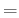

In addition to the ``Pattern'', ``Sequence'', ``Groove'' and ``Repeat'' and other directives discussed earlier, and chord data, MMA supports a number of directives which affect the flavor of your music.
The subjects presented in this chapter are ordered alphabetically.
When MMA processes a music file, all the note lengths specified in a pattern are converted to MIDI lengths.
For example in:
Bass Define BB 1 4 1 100; 2 4 5 90; 3 4 1 80; 4 4 5 90 |
we define bass notes on beats 1, 2, 3 and 4. All these notes are defined as quarter notes. MMA, being quite literal about things, will make each note exactly 192 MIDI ticks long--which means that the note on beat 2 will start at the same time as the note on beat 1 ends.
MMA has an articulate setting for each voice. This value is applied to shorten the note length. By default, the setting is 90. Each generated note duration is taken to be a percentage of this setting, So, a quarter note with a MIDI tick duration of 192 will become 172 ticks long.
If articulate is applied to a short note, you are guaranteed that the note will never be less than 1 MIDI tick in length.
To set the value, use a line like:
Chord-1 Articulate 96 |
Articulate values must be greater than 0 and less than or equal to 100.
You can specify a different Articulate for each bar in a sequence. Repeated values can be represented with a ``/'':
Chord Articulate 50 60 / 30 |
Notes: The full values for the notes are saved with the pattern definition. The articulate adjustment is applied at runtime. The articulate setting is saved with a groove.
Sometimes it is useful to duplicate the settings from one voice to another. The Copy command does just that:
Bass-1 Copy Bass |
will copy the settings from the Bass track to the Bass-1 track.
The Copy command only works between tracks of the same type.
The following settings are copied:
As previously discussed, a comment in MMA is anything following a ``//'' in a line. A second way of marking a comment is with the Comment directive. This is quite useful in combination the Begin and End directives. For example:
Begin Comment |
You could achieve the same with:
// This is a description spanning |
or even:
Comment This is a description spanning |
One minor difference between // and Comment is that the first is discarded when the input stream is read; the more verbose version is discarded during line processing.
We find that Begin Comment/End is handy to delete large sections of a song we are writing on a temporary basis.
To enable you to find problems in your song files (and, perhaps, even find problems with MMA itself) various debugging messages can be displayed. These are normally set from the command line ( ).
).
However, it is possible to enable various debugging messages dynamically in a song file using the Debug directive. In a debug statement you can enable or disable any of a variety of messages. A typical directive is:
Debug Debug=On Expand=Off Patterns=On |
Each section of the debug directive consists of a mode and the command word ON or Off. The two parts must be joined by a single ``''. You may use the values ``0'' for ``Off'' and ``1'' for ``On'' if desired.
The available modes with the equivalent command line switches are:
Mode Command Line Equivalent Debug -d debugging messages Filenames -o display filenames Patterns -p pattern creation Sequence -s sequence creation Runtime -r running progress Warnings -w warning messages Expand -e display expanded lines
The modes and command are case-insensitive (although the command line switches are not).
The current state of the debug flags is saved in the variable $_Debug and the state prior to a change is saved in $_LastDebug.
If you are using a track in only one part of your song, especially if it is at the start, it may be wise to free that track's resources when you are done with it. The Delete command does just that:
Solo Delete |
If a MIDI channel has been assigned to that track, it is marked as ``available'' and the track is deleted. Any data already saved in the MIDI track will be written when MMA is finished processing the song file.
In tracks using chords or scales you can change the direction in which they are applied:
Scale Direction UP |
The effects differ in differnt track types. For Scale and Arpeggio tracks:
UP Plays in upward direction only DOWN Plays in downward direction only BOTH Plays upward and downward (default) RANDOM Plays notes from the chord or scale randomly
When this command is encountered in a Scale track the start point of the scale is reset.
A Walk track recognizes the following option settings:
BOTH The default. The bass pattern will go up and down a partial scale. Some notes may be repeated. UP Notes will be chosen sequentially from an accending, parial scale. DOWN Notes will be chosen sequentially from a decending, partial scale. RANDOM Notes will be chosen in a random direction from a parital scale.
All four patterns are useful and create quite different effects.
In a Chord track the command is only used when Strum is set. The default setting is Up; any setting other than Down is treated as Up.
You can specify a different Direction for each bar in a sequence. Repeated values can be represented with a ``/'':
Arpeggio Direction Up Down / Both |
The setting is ignored by Bass, Drum and Solo tracks.
Judicious use of the Duplicate directive can do much to make a composition sound ``fuller''. Essentially what it does is to duplicate all the notes played to a specified octave. For example:
Begin Bass |
Creates a Bass line which plays a single note on beats 1, 2, 3 and 4 (the root and fifth of the chord). The Duplicate directive forces the notes to be played in the specified octave and one octave below that.
Notes: Duplicate takes any value between -9 and 9 as arguments--but, if the resulting note is forced out of the MIDI range, the note will not sound.
You can specify a different Duplicate for each bar in a sequence. Repeated values can be represented with a ``/'':
Chord Duplicate -1 1 / 0 |
To restore to its normal (off) setting, use a ``0'' as the argument.
This command has no effect on a Drum, Solo and Melody tracks (no warnings or errors are generated). For a similar command see DupRoot ( ).
).
MMA can generate harmony notes for you ...just like hitting two or more keys on the piano! And you don't have to take lessons.
Automatic harmonies are available for the following track types: Bass, Walk, Apreggio, Scale, Solo and Melody. To enable harmony notes, use a command like:
Solo Harmony 2 |
You can set a different harmony method for each bar in your sequence.
The following are valid harmony methods:
All harmonies are created using the current chord.
To disable harmony use a ``0'' or a ``-''.
Be careful in using harmonies. They can make your song sound heavy, especially with Bass notes.
Just in case you are thinking that MMA is a wonderful musical creator when it comes to harmonies, don't be fooled. MMA's ideas of harmony are quite facile. It determines harmony notes by finding a note lower than the current note being sounded in the chord. And its notion of ``open'' is certainly not that of traditional music theory. But, the sound isn't too bad.
The command has no effect on Drum or Chord tracks.
As a added feature to the automatic harmony generation discussed in the previous section, it is possible to set a track so that it only plays the harmony notes. For example, you might want to set up two arpeggio tracks with one playing quarter notes on a piano and a harmony track playing half notes on a violin. The following snippet is extracted from the song file ``Cry Me A River'' and sets up 2 different choir voices:
Begin Arpeggio |
Just like the Harmony command, above, you can have different settings for each bar in your sequence. Setting a bar (or the entire sequence) to '`-'' or ``0'' disables both the Harmony and HarmonyOnly settings.
The command has no effect on Drum or Chord tracks.
If you want to use this feature with Solo or Melody tracks you can duplicate the notes in your Riff or inline notation or set the voices to use via the AutoHarmonyTracks command (see  ).
).
When MMA initializes and after the SeqClear command all track octaves are set to ``4''. This will place most chord and bass notes in the region of middle C.
You can change the octave for any voice with Octave command. For example:
Bass-1 Octave 3 |
Sets the notes used in the ``Bass-1'' track one octave lower than normal.
The octave specification can be any value from 0 to 10. Various combinations of Invert, Transpose and Octave can force notes to be out of the valid MIDI range. In this case the lowest or highest available note will be used.
You can specify a different Octave for each bar in a sequence. Repeated values can be represented with a ``/'':
Chord Octave 4 5 / 4 |
To disable the generation of MIDI output on a specific track:
Bass Off |
This can be used anywhere in a file. Use it to override the effect of a predefined groove, if you wish. This is simpler than resetting a voice in a groove. The only way to reset this command is with a On directive.
To enable the generation of MIDI output on a specific track which has been disabled with an Off directive:
Bass On |
The Print directive will display its argument to the screen when it is encountered. For example, if you want to print the filename of the input file while processing, you could insert:
Print Making beautiful music for MY SONG |
No control characters are supported.
This can be useful in debugging input files.
The PrintActive directive will the currently active Groove and the active tracks. This can be quite useful when writing groove files and you want to modify and existing groove.
Any parameters given are printed as single comment at the end of the header line.
This is strictly a debugging tool. No PrintActive statements should appear in finalized grooves or song files.
To aid in creating syncopated sounding patterns, you can use the RSkip directive to randomly silence or skip notes. The command takes a value in the range 0 to 99. The ``0'' argument disables skipping. For example:
Begin Drum |
In this case we have defined a drum pattern to hit short notes 8 per bar and have set up a sequence to play this with ``OpenHiHat''. The RSkip argument of ``40'' will cause the note to be NOT sounded (randomly) only 40% of the time.
Using a value of ``10'' will cause notes to be skipped 10% for the time (they are played 90% of the time), ``90'' means to skip the notes 90% of the time, etc.
You can specify a different RSkip for each bar in a sequence. Repeated values can be represented with a ``/'':
Scale RSkip 40 90 / 40 |
If you use the RSkip in a chord track, the entire chord will not be silenced. The option will be applied to the individual notes of each chord. This may or may not be what you are after. You cannot use this option to generate entire chords randomly. For this effect you need to create several chord patterns and select them with SeqRnd.
You can use RSkip without a track argument. This is useful when used with an argument of ``0'' to (temporarily) disable the setting for all tracks.
One of the biggest problem with computer generated drum and rhythm tracks is that, unlike real musicians, the beats are precise and ``on the beat''. The RTime directive attempts to solve this.
The command can be applied to all tracksfootnote:The best use of using RTime for all tracks is with a ``0'' argument to (temporarily) disable the setting for all tracks.
RTime 5 |
or a specified one:
Drum4 Rtime 4 |
The value passed to the RTime directive are the number of MIDI ticks with which to vary the start time of the notes. For example, if you specify ``5'' the start times will vary from -5 to +5 ticks) on each note for the specified track. There are 192 MIDI ticks in each quarter note.
Any value from 0 to 100 can be used; however values in the range 0 to 10 are most commonly used. Exercise caution in using large values!
You can specify a different RTime for each bar in a sequence. Repeated values can be represented with a ``/'':
Chord RTime 4 10 / 4 |
This option is only used by Scale tracks. It can be set for other tracks, but the setting is not used.
By default, the ScaleType is set to Auto. The settings permissible are:
CHROMATIC Forces use of a chromatic scale AUTO Uses scale based on the current chord (default)
When this command is encountered in a Scale track the start point of the scale is reset.
If your sequence, or groove, has more than one pattern (ie. you have set SeqSize to a value other than 1), you can use this directive to force a particular pattern point to be used. The directive:
Seq |
resets the sequence counter to 1. This means that the next bar will use the first pattern in the current sequence. You can force a specific pattern point by using an optional value after the directive. For example:
Seq 8 |
forces the use of pattern point 8 for the next bar. This can be quite useful if you have a multibar sequence and, perhaps, the eight bar is variation which you want used every eight bars, but also for a transition bar, or the final bar. Just put a seq 8 at those points. You might also want to put a seq at the start of sections to force the restart of the count.
This command will also disable the effects of SeqRnd. One difference between SeqNoRnd and Seq is that the current sequence point is set with the latter; with SeqNoRnd it is left at a random point.
Note: Using a value greater than the current SeqSize is not permitted.
This is a very useful command! For example, look at the four bar introduction of the song ``Exactly Like You'':
Groove BossanovaEnd |
Here we have used the four bar ending groove to create an interesting introduction.
By default MMA plays all the notes in a chord at the same time. To make the chord more like something a guitar or banjo might play, use the Strum directive. For example:
Chord-1 Strum 5 |
sets the strumming factor to 5 for track Chord-1.
Setting the Strum in any track other than a Chord track will generate a warning message and the command will be ignored.
The strum factor is specified in MIDI ticks. Usually values around 10 to 15 work just fine. The valid range for Strum is 0 to 100.
You can specify a different Strum for each bar in a sequence. Repeated values can be represented with a ``/'':
Chord Strum 20 5 / 10 |
Note: When chords have both a strum and invert applied, the order of the notes played will not necessarily be root, third, etc. The notes are sorted into ascending order, so for a C major scale with and invert of 1 the notes played would be ``E G C''. That is, unless the Direction ( ) has been set to ``DOWN'' in which case the order would be reversed (but the notes would be the same).
) has been set to ``DOWN'' in which case the order would be reversed (but the notes would be the same).
You can change the key of a piece with the ``Transpose'' command. For example, if you have a piece notated in the key of ``C'' and you want it played back in the key of ``D'':
Transpose 2 |
will raise the playback by 2 semi-tones. Since I play tenor saxophone, I quite often do:
Transpose -2 |
which puts the MIDI keyboard into the same key as my horn.
You can use any value between -12 and 12. All tracks (with the logical exception of the drum tracks) are effected by this command.
The Unify command is used to force multiple notes of the same voice and pitch to be combined into a single, long, tone. This is very useful when creating a sustained voice track. For example, consider the following which might be used in real groove file:
Begin Bass-Sus |
Without the Unify On command the strings would be sounded (or hit) four times during each bar; with it enabled the four hits are combined into one long tone. This tone can span several bars if the note(s) remain the same.
The use of this command depends on a number of items:
You can specify a different Unify for each bar in a sequence. Repeated values can be represented with a ``/'':
Chord Unify On / / Off |
But, we're not sure why you'd want to.
Valid arguments are ``On'' or ``1'' to enable; ``Off'' or ``0'' to disable.
The MIDI instrument or voice used for a track is set with:
Chord-2 Voice Piano1 |
Voices apply only to the specified track. The actual instrument can be specified via the MIDI instrument number, or with the symbolic name. See the tables in the MIDI voicing section ( ) for lists of the recognized names.
) for lists of the recognized names.
You can create interesting effects by varying the voice used with drum tracks. By default ``Voice 0'' is used. However, you can change the drum voices. Our library files do not change the voices since this appears to be highly dependent on the MIDI synth you are using.
You can specify a different Voice for each bar in a sequence. Repeated values can be represented with a ``/'':
Chord Voice Piano1 / / Piano2 |
In previous section we saw how to set a voice for a track by using its standard MIDI name. The VoiceTr command sets up a translation table that can be used in two different situations:
VoiceTr works by setting up a simple translation table of ``name'' and ``alias'' pairs. Whenever MMA encounters a voice name in a track command it first attempts to translate this name though the alias table.
To set a translation (or series of translations):
VoiceTr Piano1=Clavinet Hmmm=18 |
Note that you additional VoiceTr commands will add entries to the existing table. To clear the table use the command with no arguments:
VoiceTr // Empty table |
Assuming the first command, the following will occur:
Chord-Main Voice Hmmm |
The Voice for the Chord-Main track will be set to ``18'' or ``Organ3''.
Chord-2 Voice Piano1 |
The Voice for the Chord-2 track will be set to ``Clavinet''.
If your synth does not follow standard GM-MIDI voice naming conventions you can create a translation table which can be included in all your MMA song files via an RC file. But, do note that the resulting files will not play properly on a synth conforming to the GM-MIDI specification.
Following is an abbreviated and untested example for using an obsolete and unnamed synth:
VoiceTr Piano1=3 \ |
Notes: the translation is only done one time and no verification is done when the table is created.